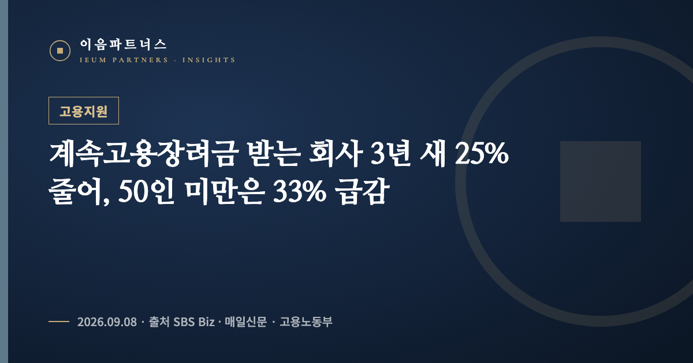

계속고용장려금 받는 회사 3년 새 25% 줄어, 50인 미만은 33% 급감

정년이 지난 직원을 계속 고용하는 회사에 주는 고령자 계속고용장려금을 받은 사업장이 3년 사이 25% 줄었습니다. SBS Biz는 “50인 미만 사업장은 약 33% 급감한 반면 50인 이상은 오히려 늘었습니다”라고 전했습니다(SBS Biz). 이 글에서는 숫자가 보여 주는 흐름과, 작은 회사가 지원금을 놓치지 않으려면 무엇을 확인해야 하는지 정리합니다.
작은 회사일수록 오래 일한 숙련 직원 한 명의 빈자리가 크게 느껴집니다. 그런 직원을 계속 고용하면서 지원 요건을 갖출 수 있을지 궁금하다면 카카오톡 채널 이음파트너스에서 함께 점검해 볼 수 있습니다.
숫자로 보면 무엇이 달라졌나
국회 기후에너지환경노동위원회 소속 의원이 고용노동부에서 받은 자료에 따르면, 2022년과 2025년 사이 변화는 다음과 같습니다.
| 구분 | 내용 |
|---|---|
| 전체 지원 사업장 | 3,028곳 → 2,271곳(25.0% 감소) |
| 전체 지원 인원 | 7,994명 → 7,698명(3.7% 감소) |
| 지급액 | 226억 3천만 원 → 204억 9천만 원(9.5% 감소) |
| 50인 미만 사업장 | 2,400곳 → 1,613곳(32.8% 감소), 인원 4,290명 → 3,192명 |
| 50인 이상 사업장 | 628곳 → 658곳(4.8% 증가), 인원 3,704명 → 4,506명 |
업종별로는 지원 사업장 가운데 제조업 비중이 50.3%에서 58.1%로 높아졌고, 보건사회 서비스 업종 비중은 18.7%에서 12.2%로 낮아졌습니다.
작은 회사는 왜 놓칠까
같은 자료를 분석한 국회 쪽에서는 취업규칙 개정 절차와 노무 역량이 부족한 소규모 사업장이 지원에서 떨어져 나가고 있다고 진단했습니다(매일신문). 이 장려금은 정년제도를 1년 이상 운영해 온 사업장만 계속고용제도 도입을 인정받는 등 취업규칙 요건부터 챙겨야 하는 제도입니다.
2026년부터는 지원 금액이 1인당 수도권 월 30만 원, 비수도권 월 40만 원으로 나뉘었고 최대 3년까지 지원됩니다(고용노동부). 신청은 회사가 직접 하고, 지원 여부와 금액은 고용노동부(고용센터) 심사로 정해집니다. 금액이 늘어도 요건을 갖추지 못하면 지급되지 않으니, 제도를 알고 미리 준비하는 것이 먼저입니다.
대표님이 지금 확인할 것
- 우리 회사 취업규칙에 정년 규정이 있고, 1년 이상 운영해 왔는지
- 정년이 다가오는 직원 가운데 계속 고용하고 싶은 사람이 있는지
- 정년 연장·폐지·재고용 가운데 우리 회사에 맞는 방식이 무엇인지 노무사와 상의했는지
- 고용24에서 신청 방법과 분기별 신청 기한을 확인했는지
참고한 자료
- 고령자 계속고용장려금 지원 사업장, 3년 새 25% 줄어 — SBS Biz (2026.09.08)
- 고령자 계속고용장려금 지방 40만원·수도권 30만원, 받는 쪽은 근로자 아닌 회사다 — 매일신문 (2026.10.18)
- [인포그래픽] 고령자 계속고용장려금 — 고용노동부 (2026.10.06)
작은 회사라서 노무 업무까지 챙기기 어렵다면 카카오톡 채널 이음파트너스로 편하게 물어봐 주세요.
※ 이 글은 일반적인 정보 제공을 위한 것으로, 개별 사안은 세무사·노무사 등 전문가와 함께 확인하시기 바랍니다.